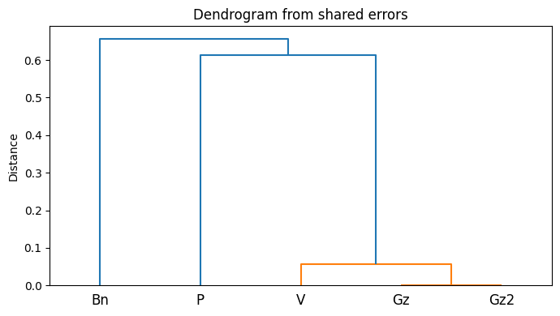

The Novellino's Prologue: Between Manuscripts and Printed Editions
Collating five witnesses of the Novellino's Prologue to explore its textual transmission and variation.
Abstract
The Novellino is one of the earliest collections of novellas in Italian literature. It is distinguished by the presence of a prologue and by a complex textual tradition that preserves at least two distinct redactions in both manuscript and printed witnesses. Since the prologue survives in only some of these witnesses, an important question arises: how are they related? To investigate these relationships, a collation was carried out on five witnesses:
- P – Florence, Biblioteca Nazionale Centrale, MS Panciatichiano 32.
- V – Vatican City, Biblioteca Apostolica Vaticana, MS Vaticano latino 3214.
- Gz – Editio princeps (1525), edited by Carlo Gualteruzzi.
- Gz2 – Reprint of the first edition.
- Bn – Fourth printed edition (1572), edited by the philologist Vincenzio Borghini.
Result

Comparison of textual variants
The full data is in tabella_varianti.csv.
| V | Gz | Gz2 | P | Bn |
|---|---|---|---|---|
| Quando lo nostro signore Gesù Cristo parlava umanamente con noi infra all’altre sue parole ne disse | Quando lo nostro signore Gesù Cristo parlava umanamente con noi infra all’altre sue parole ne disse | Quando lo nostro signore Gesù Cristo parlava umanamente con noi infra all’altre sue parole ne disse | Quando il nostro signore Gesù Cristo parlava umanamente con noi fra l’altre sue parole ne disse | Comune sententia e verace si è |
| Abbondanza | Abbondanza | Abbondanza | Baldanza | Baldanza |
| Le vostre menti e le vostre parole nel piacere di Dio | Le vostre menti e le vostre parole nel piacere di Dio | Le vostre menti e le vostre parole nel piacere di iddio | La vostra mente e le vostre parole primamente nel piacere di iddio | Le vostre menti primamente nel piacere di Dio |
| Parlando, onorando e temendo e laudando quel signore nostro | Parlando, onorando e temendo e laudando quel signore nostro | Parlando, onorando e temendo e laudando quel signore nostro | Parlando, onorando, tenendo e laudando quello signore | Onorando, temendo e laudando lui |
| Che n’amò prima che elli ne criasse e prima che noi medesimi ci amassimo | Che n’amò prima che elli ne criasse e prima che noi medesimi ci amassimo | Che n’amò prima che elli ne criasse e prima che noi medesimi ci amassimo | Che ci ama prima che ci creasse e prima che noi stesse ci amassimo | |
| Si può parlare | Si può parlare | Si può parlare | Si può uomo parlare | Si può uomo parlare |
| Il corpo | Il corpo | Il corpo | Li corpi nostri | Il corpo |
| Sostentare | sostentare | Sostentare | Sostenere | Sostentare |
| Onestade | Onestade | Onestade | Onestità | Onestade |
| Nell’opere quasi com’uno specchio | Nell’opere quasi com’uno specchio | Nell’opere quasi com’uno specchio | Nell’opere molte volte quasi com’uno specchio | Nell’opere quasi com’uno specchio |
| Appo i | Appo i | Appo i | Alli | Alli |
| Donari | Donari | Donari | Doni | Donari |
| Chi | Chi | Chi | Quale | Quale |
| Simigliare per lo tempo | Somigliare per lo tempo | Somigliare per lo tempo | Assimigliare nel tempo | Assimigliare nel tempo |
| Talora | Talora | Talora | Talvolta | Talora |
| A | A | A | Alli | A |
| Sono stati molti che sono vivuti | Sono stati molti che sono vivuti | Sono stati molti che sono vivuti | Sono isusi molti che vivuti sono | Sono stati molti che sono vivuti |
| Od | Od | Od | Overo | Od |
| Alcuna | Alcuna | Alcuna | Una | Alcuna |
| Conto | Conto | Conto | Conto | Contro |
How it was made
One short paragraph. Where the data came from, what produced the figure, and how someone could rebuild it. The full detail lives in the README.